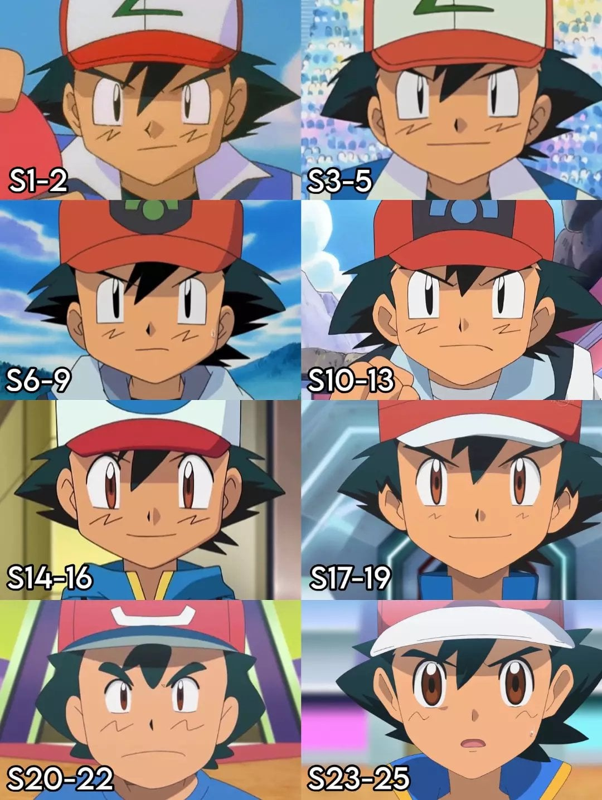

S20-22는 무슨 바보로 만들어 놨네ㅋㅋㅋㅋㅋㅋ

S20-22는 무슨 바보로 만들어 놨네ㅋㅋㅋㅋㅋㅋ
20-22는 지우가 아닌데
나이값 못하고 포켓몬 트레이너 되겠다고 돌아다니는 바닷가 어촌마을 백수 아저씨마냥 그려놨네
동공이 점점 풀려버리고 있어
알로라 시절이 ㄹㅇ 개찐빠 그 자체
99년 내가 처음 봤던 지우는 온데간데 없고 저능아새끼 한마리가 피카츄 데리고다니고있더라 일단 무인편 이후로 성우바뀌면서 어른스럽던 느낌이 확 사라졌고
그래도 내꿈은 포켓몬마스터로 마무리지어줘서 고맙다
s-17~19가 딱 완성형이네
썬문은 전설이다
알로라는 전설이다 정말
20-22는 굳건이잖아
20 22는 나이 추정이 안되네 10대에서 40대까지로 봐도 무방함 ㄷㄷ
20 22는 파워포인트로 만들었누
볼따구 선이 곡선이되니까 뭔 털처럼 보이네